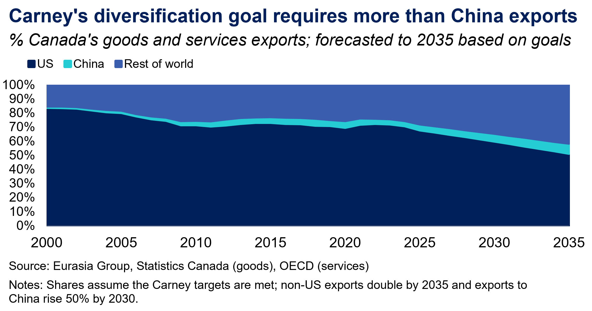
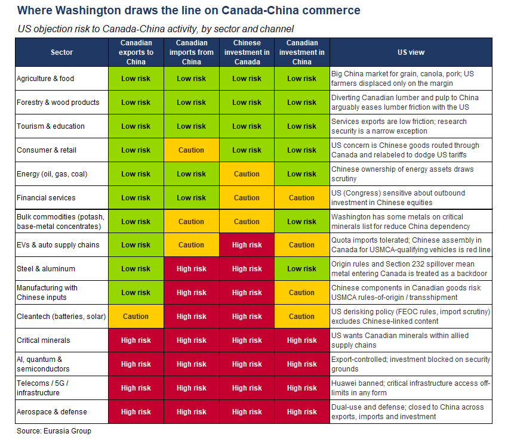
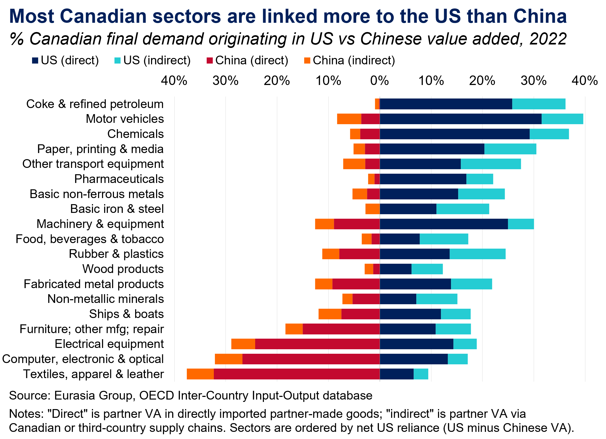

|
 |
|||
|
||||
|
||
Ottawa’s reset with Beijing has momentum. Carney’s trip to China in January and subsequent ministerial visits underscore improving bilateral relations after years of diplomatic strain and tariff increases. Tensions with the US are accelerating Canada’s efforts to expand commercial ties with China as part of its trade diversification agenda (see: Carney’s variable geometry will supplement, not replace, Canada’s US ties, 26 March 2026). The two countries have agreed to improve two-way trade and investment and to formalize economic dialogue. Canadian commodity exporters, consumer brands, and financial services firms stand to benefit most, while Beijing is seeking Canadian investments across a range of sectors. Chinese goods and investments entering Canada, however, will be limited by political and national security sensitivities.  US blowback could undercut deepening China ties. Carney aims to increase exports to China by 50% by 2030, and relative US-China strategic stability gives him room to pursue that goal (see: High expectations in Beijing challenge stable US-China relations, 7 July 2026). In most cases, Canada exports different products to the US and China. Nonetheless, the US remains focused on reducing trade exposure to China (see: Trump-Xi stabilization will not reverse the US-China race to de-risk, 4 May 2026). Canada is broadly aligned with US efforts to secure strategic supply chains, but it will need to calibrate its ties with China to avoid crossing US red lines. The challenge for Ottawa is that the concessions likely needed to unlock substantive commercial opportunities with Beijing could antagonize Washington. If forced to choose, Canada will prioritize its ties with the US.  Chinese EVs are a flashpoint for US trade talks. Ottawa wants to preserve integrated North American automotive supply chains, and Ontario Premier Doug Ford, whose province accounts for 85% of Canadian automotive employment, supports a “fortress North America” approach. Though Canada’s deal to reduce tariffs on 49,000 Chinese EVs in exchange for lower Chinese tariffs on Canadian canola has become a source of friction with the US (see: Trump likely to use Canada-China deal as USMCA leverage, 23 January 2026), it does not appear to have crossed US red lines—the number of imports is small, the vehicles cannot be exported to the US, and President Donald Trump did not appear to object at the G7 summit last month. Recent discussions about producing Chinese EVs in Canada come much closer to those red lines. Proposed congressional legislation to ban the import and manufacture of Chinese cars reflects bipartisan US concerns over national security and the future of automotive manufacturing. Against that backdrop, Canada is engaging with Chinese EV producers to build leverage and develop contingency plans in case the US follows through on its threat to repatriate auto production (see: Auto sector most exposed in prolonged North American trade shift, 30 June 2026). The risk is that those talks trigger the outcome Canada wants to avoid, as US officials have made their concerns about Chinese auto investments clear. Moreover, if Ottawa reverses an EV deal under US pressure, Beijing will likely retaliate, including by creating operational friction for Canadian firms in China.
 China seeks a commercial foothold in North America. Beijing’s priority is stabilization with Washington, and it has been restrained about exploiting US vulnerabilities to avoid antagonizing Trump. Its main goal is commercial concessions to give Chinese firms a manufacturing base in Canada. If Beijing accepts Ottawa’s localization conditions, it could begin to normalize Chinese EVs in North America and gradually weaken political barriers to reentry into the US market. Chinese automakers view Canada less as a standalone market than a foothold for broader North American ambitions. They want to build brand recognition, regulatory familiarity, and a supply-chain presence. If Washington relents, Beijing gains a backdoor to the US; if the US fights Canada over Chinese investment, cross-border supply chains fragment and China appears a more reliable partner. National security will limit Chinese investments in Canada. Sectors that pose minimal national or economic security concerns for Canada or the US are most likely to benefit from deeper commercial ties with China. Canadian agricultural and commodity producers, for instance, will gain export opportunities, while financial services firms operating in China are well positioned to expand their activities. Chinese investment in Canadian conventional and renewable energy production, mining, and real estate is also likely to increase. However, national security screening under the Investment Canada Act will continue to set a very high bar for Chinese investment in strategic sectors such as mining and infrastructure. Defense-adjacent industries such as aerospace, advanced technologies, and telecommunications will remain off limits. |